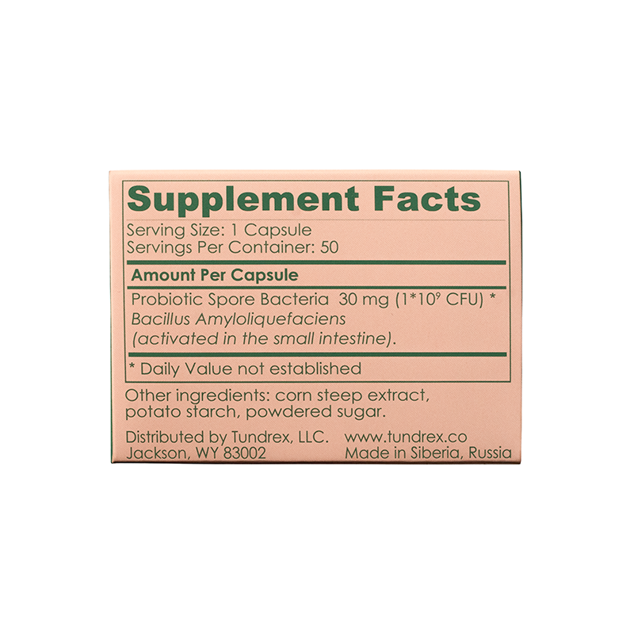
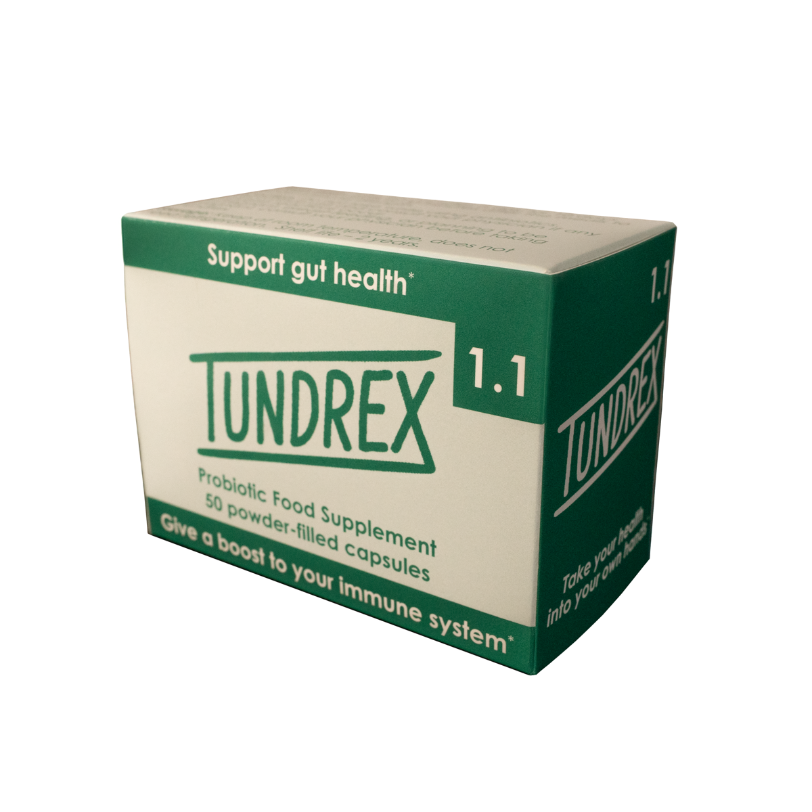
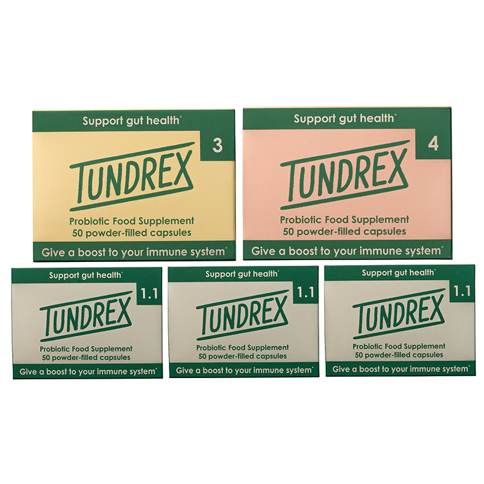

Tundrex 4 delivers Bacillus amyloliquefaciens active in the small intestine — the third phase of comprehensive Tundrex protocols. Together with Tundrex 1.1 and Tundrex 3, it provides complete digestive tract microbiome coverage for deep restoration.
Tundrex 4 is the third product in the Tundrex family, delivering Bacillus amyloliquefaciens to the small intestine. Where Tundrex 1.1 (Bacillus subtilis) initiates the first phase of small intestine support and Tundrex 3 addresses the large intestine, Tundrex 4 returns attention to the small intestine with a complementary strain — completing a full digestive system restoration cycle.
Tundrex 4 is used exclusively in the advanced protocols: Return to Well-Being and the Protocol to Support GIT Treatment. It is the final phase in these comprehensive multi-stage regimens, taken after completing both the Tundrex 1.1 and Tundrex 3 phases.
Active Ingredient: Bacillus amyloliquefaciens (sourced from organic Siberian tundra soil)
Serving Size: 5 capsules
Servings per Box: 10
Shelf Life: 2 years at room temperature
* These statements have not been evaluated by the Food and Drug Administration. This product is not intended to diagnose, treat, cure, or prevent any disease.
Tundrex 1.1 (small intestine, B. subtilis) → Tundrex 3 (large intestine, B. amyloliquefaciens) → Tundrex 4 (small intestine, B. amyloliquefaciens). Used in sequence for complete digestive tract restoration.
Unlike fragile Lactobacillus strains, Bacillus subtilis forms protective spores that survive harsh stomach acid, arriving viable and active exactly where they're needed in your digestive tract.
Bacillus bacteria are naturally found in soil and are important members of the human microbiome family — but often missing from modern diets due to over-sanitization and processed foods.
The endosporal form is the key to Tundrex's efficacy — a protective shell that allows the bacteria to safely travel through stomach acid and activate in the intestine to deliver probiotic benefits.
Developed in the late 1980s–90s, this technology has been researched, tested, and successfully marketed worldwide for over three decades — long before probiotics became mainstream.
Tundrex 4 is taken as the third and final phase of the Return to Well-Being or Protocol to Support GIT Treatment. Complete Tundrex 1.1 and Tundrex 3 phases first.
Take 5 capsules of Tundrex 4 per day for 10 days. Space them evenly — one capsule approximately every 4 hours.
Example: 7 am, 11 am, 3 pm, 7 pm, 11 pm — or choose your own consistent schedule. Taking with food is recommended.
Full protocol (Tundrex 1.1 + 3 + 4) can be repeated every 12–24 weeks as part of Return to Well-Being or the GIT Support Protocol.
Tundrex 4 is included in the two most comprehensive Tundrex protocols — as the final phase.

The entry-level protocol featuring Tundrex 1.1 only — does not include Tundrex 4. A great starting point.

A 20-day protocol with Tundrex 1.1 + Tundrex 3 — does not include Tundrex 4. Save 10%.

A complete 35-day protocol using all three Tundrex products: 1.1, 3, and 4. Full-spectrum microbiome restoration. Save $25.
"Three months in, doing a course every quarter as suggested. Digestion is much calmer — no more afternoon crashes, better focus at work. It's become a non-negotiable part of my routine."
"I was skeptical — I'd tried other Bacillus subtilis supplements before with mixed results. Whatever they're doing with the Siberian sourcing, it's different. My gut feels more stable than it has in years."
"A friend who's a functional medicine practitioner pointed me toward Tundrex. Started with the Immunity Boost and haven't looked back. Clean ingredients, no fillers, and it actually works."
Verified buyers share their experiences with Tundrex 4.
"Tundrex 4 was the final phase of my Return to Well-Being protocol. By the time I started it, my digestion was already much improved from phases 1 and 2. But Tundrex 4 seemed to lock in the results — I feel more stable and resilient than I have in years."
"I did the full GIT Treatment protocol — all three products over 45 days. Tundrex 4 was the third phase, and honestly that's where everything clicked. My chronic discomfort that I'd had for two years finally faded. Worth every penny."
"The small intestine targeting of Tundrex 4 is what I needed after the large intestine work from Tundrex 3. I was hesitant to commit to the full three-product protocol but I'm genuinely glad I did. The system approach makes a lot of biological sense."
"Finishing up my second Return to Well-Being cycle. The difference between how I felt before Tundrex and how I feel now is hard to overstate. Energy is up, digestion is smooth, and my seasonal allergies have improved too — which I wasn't expecting."